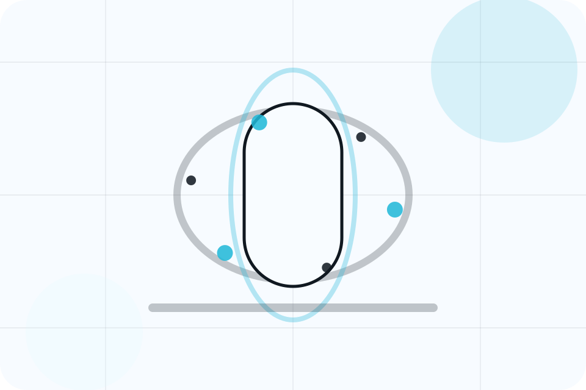
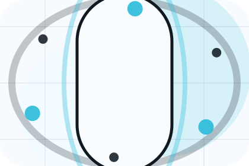
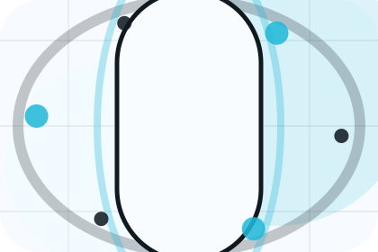
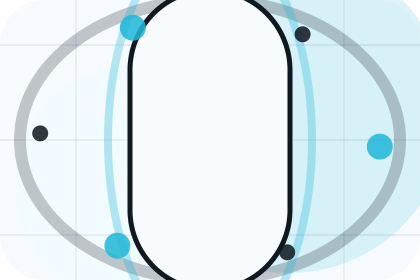
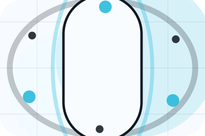
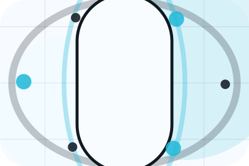
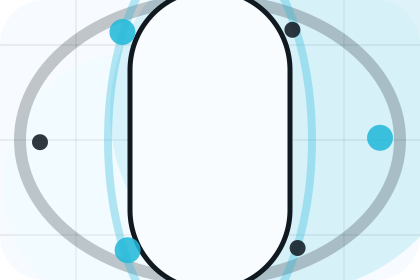
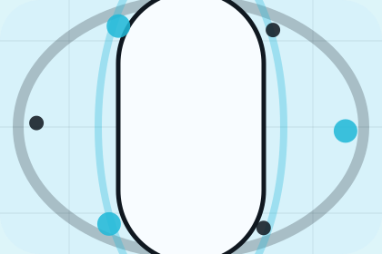

Guide
A useful entry point for visitors who need more context before they book an appointment.
Guides / 01
Guides opens as a clear healthcare decision hub: what Aster offers, who it helps, why it matters, and which route to take first.
The first screen combines positioning, proof, primary action, and fast internal navigation, so people can act immediately or compare the rest of the guides route with context.
Body scan split hero
Select the closest route and Aster keeps the next step, proof, and follow-up expectation aligned with fear reduction and care confidence.

Guides / 02
Topics gives researching visitors a practical route into guides, checklists, and comparison material without leaving the site structure.
Each resource behaves like a useful internal link, giving cold and warm visitors a way to learn, compare, and return to the action path.
Explore GuidesA useful entry point for visitors who need more context before they book an appointment.
A scannable comparison aid that makes research usable before the next decision.
A route back to support, services, or contact when the visitor is ready to act.
Guides / 03
Prevention gives researching visitors a practical route into guides, checklists, and comparison material without leaving the site structure.
Each resource behaves like a useful internal link, giving cold and warm visitors a way to learn, compare, and return to the action path.
Explore GuidesA useful entry point for visitors who need more context before they book an appointment.
A scannable comparison aid that makes research usable before the next decision.
A route back to support, services, or contact when the visitor is ready to act.
Guides / 04
Symptoms frames the pressure behind the visit, then connects it to a practical path visitors can recognise and act on.
The copy avoids blame and panic. It shows the common friction, the practical consequence, and the calmer route Aster uses to move people forward.
Explore Guides

Symptoms names the real friction visitors bring to the guides route, so the page feels relevant before any claim is made.
Guides / 05
Recovery gives researching visitors a practical route into guides, checklists, and comparison material without leaving the site structure.
Each resource behaves like a useful internal link, giving cold and warm visitors a way to learn, compare, and return to the action path.
Explore GuidesA useful entry point for visitors who need more context before they book an appointment.
A scannable comparison aid that makes research usable before the next decision.
A route back to support, services, or contact when the visitor is ready to act.
Guides / 06
Lifestyle gives researching visitors a practical route into guides, checklists, and comparison material without leaving the site structure.
Each resource behaves like a useful internal link, giving cold and warm visitors a way to learn, compare, and return to the action path.
Explore GuidesA useful entry point for visitors who need more context before they book an appointment.
A scannable comparison aid that makes research usable before the next decision.
A route back to support, services, or contact when the visitor is ready to act.
Guides / 07
Articles gives researching visitors a practical route into guides, checklists, and comparison material without leaving the site structure.
Each resource behaves like a useful internal link, giving cold and warm visitors a way to learn, compare, and return to the action path.
View ResourcesAster structures articles around guide, checklist, and a clear next route so visitors can compare the block quickly before they book an appointment.
Book Appointment
GuideA useful entry point for visitors who need more context before they book an appointment.
Open resource
ChecklistA scannable comparison aid that makes research usable before the next decision.
Open resource
QuestionsA route back to support, services, or contact when the visitor is ready to act.
Open resourceGuides / 09
Education gives researching visitors a practical route into guides, checklists, and comparison material without leaving the site structure.
Each resource behaves like a useful internal link, giving cold and warm visitors a way to learn, compare, and return to the action path.
Explore GuidesA useful entry point for visitors who need more context before they book an appointment.
A scannable comparison aid that makes research usable before the next decision.

A route back to support, services, or contact when the visitor is ready to act.
Guides / 10
Aster closes the guides route with a clear action, a quick reminder of the value, and a low-friction way to book an appointment.
Visitors who are ready can use the primary action. Visitors who are still comparing can scan the section links, proof, and support routes before they book an appointment.
Book AppointmentThe final block keeps the choice simple: act now, compare one more proof route, or send enough detail for a focused response.
Book Appointmentfear reduction and care confidence
A scan-first care journey with minimalist copy, body-data panels, instant-results proof, and a direct appointment CTA. Guides ends with a direct path to book an appointment, plus enough context for visitors who still need to compare.

Book AppointmentInformation supports planning and is not a diagnosis or emergency instruction. People should use local emergency services for urgent symptoms.